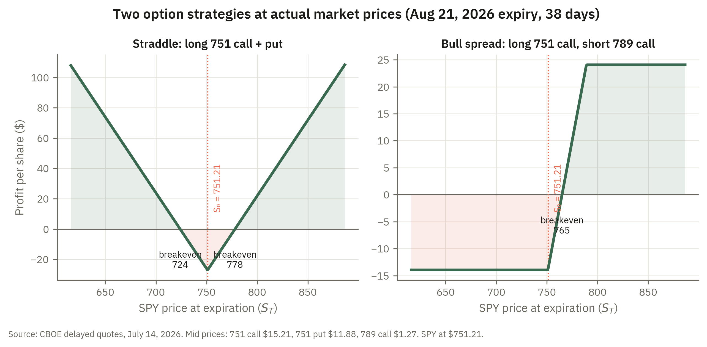

13 Options
13.1 Introduction
Four questions define the study of options. First, what factors determine the price of an option, and what qualitative predictions can be made before any formal model is specified? Second, how should an option be priced — that is, what is the fair value of the right, without obligation, to buy or sell an asset at a fixed price on or before a future date? Third, how can the relative prices of puts and calls on the same underlying asset be constrained by no-arbitrage, and what does that constraint imply about early exercise? Fourth, how can options be combined with one another to engineer specific payoff profiles, and how are the resulting positions managed dynamically? These questions matter profoundly for financial markets. Options allow investors and corporations to hedge specific risks with surgical precision, to speculate on volatility independently of the direction of asset prices, and to tailor their exposure to future outcomes in ways that cannot be achieved with forwards, futures, or the underlying asset alone. The solution to the pricing question, provided by Black, Scholes, and Merton in the early 1970s, effectively founded the modern era of quantitative finance.
The first question establishes a qualitative framework before any formula is derived. A call option increases in value when the underlying stock price rises (more likely to expire in the money), when the strike price falls (a lower hurdle), when time to expiration increases (more opportunity for the stock to move favorably), when volatility rises (greater dispersion of outcomes, and only the favorable tail matters to the option holder), and when the risk-free rate rises (reducing the present value of the fixed payment owed upon exercise). These five factors — stock price, strike, time, volatility, and rate — are the inputs to every option pricing model and understanding their effects qualitatively provides a vital intuition check on any formula.
The second question is answered by the replication argument. If the payoff of an option can be reproduced exactly by a portfolio of the underlying stock and a risk-free bond, then no-arbitrage forces the option price to equal the cost of that portfolio. The binomial model makes this argument transparent in a discrete-time, two-state setting: the hedge ratio — the number of shares needed to offset the option’s risk — can be computed directly from the range of possible payoffs and prices, and the resulting option price requires no assumption about investor risk preferences or the probability of an up move. The Black-Scholes formula extends this replication logic to a continuous-time setting with lognormal stock prices, yielding a closed-form expression for the call price and revealing that implied volatility — the only unobservable input — is what option markets are ultimately pricing.
The third question leads to put-call parity: a constraint relating the prices of European puts and calls with the same strike and expiration. The derivation is a straightforward portfolio comparison, but its implications are far-reaching. It immediately implies that an American call on a non-dividend-paying stock should never be exercised early — selling the option is always worth at least as much as exercising it — so American and European calls on such stocks have the same price. For puts, this logic fails, and early exercise can be optimal.
The fourth question concerns the vast space of strategies that options make possible. Even a small number of options can be combined into bull spreads, bear spreads, butterfly spreads, straddles, and strangles to express views on direction, on the magnitude of price movement, or on the range within which prices will stay. Dynamic management of these positions requires understanding the Greeks — delta, gamma, theta, vega, and rho — which measure the option’s sensitivity to each of its inputs and are the primary tools of risk management for any options portfolio.
The chapter begins by cataloguing the factors affecting option prices and deriving put-call parity with its early-exercise implications. A survey of option strategies follows. It then introduces the binomial model to build intuition for replication and hedge ratios, before presenting the Black-Scholes formula and working through its interpretation. The chapter concludes with the Greeks, deriving delta, gamma, vega, and rho from the Black-Scholes formula and explaining delta hedging and why higher-order sensitivities matter for managing options positions over time.
The options market this chapter prices has exploded in size and speed. IFR reported that zero-days-to-expiry (“0DTE”) contracts have become the dominant force in the S&P 500 options market — now around half of all index-options volume, much of it traded by individuals. Every one of those contracts is priced by the same Black–Scholes logic and hedged using the Greeks introduced here. Read it at IFR.
13.2 Option contracts
An options contract is an agreement that gives the long position the right, but not the obligation to purchase or sell a particular asset by a certain date in the future for a particular price. The price at which the option may be bought or sold is called the strike price or exercise price and the date specified in the contract is the maturity date or expiration date. Options can be either European which means that they must be exercised on a given day, or American which means that they may be exercised at any point before the expiration date.
- Call options.
-
A call option gives the long position the right to buy an underlying asset for the strike price. The seller or short position on the option is said to "write" the call. If the price of the call option is \(c\), the price of the stock at expiration is \(S_{T}\) and the strike price is \(K\) then the total payoff to the option is \(\max \{S_T - K, 0\} - c\). The payoff to the short position will be \(c - \max \{S_T - K, 0\}\). (Draw)
- Put options.
-
Put options give the long position the right to sell a particular asset at a given strike price. If the price of the put is \(p\) then the payoff to the put will be \(\max \{K - S_T, 0\} - p\). The payoff to the short position will be \(p - \max \{K - S_T,0 \}\). (Draw)
Options can be written on many underlying assets including: stocks, market indices, futures contracts, interest rate derivatives, etc. For most of our discussion we will consider options whose underlying asset is a stock. For equity options the contract is usually for 100 shares of the underlying stock. Thus, if the price of a call option on stock XYZ is $5.00 per share then the initial investment for one options contract is $500.
13.3 Stock Options
There are a few factors that affect the price of equity options. These include
- The current stock price \(S_0\). Holding all other factors constant (especially the strike price of the option) an increase in \(S_0\) will increase the price of any particular call option and decrease the price of a put option.
- The strike price \(K\). Holding all else constant, increasing \(K\) will lead calls to be less likely to be in the money and cause puts to be more likely to be in the money. Thus the price of a call decreases in \(K\) while the price of the put increases in \(K\).
- Time to expiration. For American options, both put and call options weakly increase in value with the time to expiration. This happens because they each have more chance to be in the money as the expiration date increases. With European options it is not so simple.
- Volatility. Both call and put options (American and European) increase in the volatility of the underlying stock. As the stock gets more volatile, it has more likelihood of being in the money.
- Risk-free rate. Holding the stock price constant, an increase in the risk-free rate will increase the value of calls and decrease the value of puts.
13.4 Put-Call Parity
There is a relationship between the price \(p\) of a European put and the price \(c\) of a European call. To see this, consider the following two portfolios.
- Holding one European call option with strike price \(K\) and cash in the amount of \(Ke^{-rT}\).
- Hold one share of the stock and one European put option with strike price \(K\).
Consider the payoff to portfolio 1. If \(S_T < K\) then the total value of the portfolio is \(K\) (the value of the cash at time \(T\)). If \(S_T > K\) then the value of the portfolio is \(S_T - K + K = S_T\). As such, the value of portfolio 1 is \(\max(S_T,K)\).
Now consider the value of portfolio 2. If \(S_T < K\) then the payoff to the put is \(K - S_T\) and the value of the stock is \(S_T\) so the total value of the portfolio is \(K\). On the other hand, if \(S_T > K\) then the value of the put is zero and the value of the stock is \(S_T\). Thus the value of portfolio 2 is also \(\max(S_T,K)\) and the payoffs to each portfolio are the same. Since their payoffs are the same, they must have the same price. This implies that
\[c + Ke^{-rT} = p + S_0.\]
That is, the price of a call plus the cash position must be equal to the price of the put and the current stock price.
Notice first that \(c \ge 0\) and \(p \ge 0\) since puts and calls may always be left unexercised and as such will not impose any liability on the holder. Rearranging the put-call parity relationship then shows that
\[c = p + S_0 - Ke^{-rT}\]
If we call \(C\) the price of an American call we note that \(C \ge c\). Since \(p \ge 0\) this implies that
\[C \ge c \ge S_0 - Ke^{-rT} > S_0 - K\]
Notice that the right hand side of this inequality is the value that would be received if the American option were to be exercised today. The left hand side is the value that would be obtained if the American call were sold. Since the left hand side is always larger than the right hand side, we see that it is never optimal to exercise an American call option. If a person wants to close out her position, she should just sell the option.
Since it is never optimal to exercise an American call early, the early exercise option must have no value. Hence it should be that \(C = c\). For put options this is not the case. If a firm on which you hold a put goes bankrupt, there is no possibility that the stock price will fall any lower (it is already 0) so the option should be exercised so that the money can be invested somewhere else. Hence \(P > p\) (the price of an American put is higher than a European put).
13.5 Option Strategies
Options provide an investor a wide range of opportunities for taking a view on stock prices. What follows are some possible investment strategies using options.
- Spread.
-
A spread involves taking a position in 2 or more options of the same type.
- Bull spread.
-
One way to construct a bull spread is to buy a call option with a strike price \(K_1\) and selling a call option with a strike price \(K_2 > K_1\). The payoff to the first option is \(\max (S_T - K_1,0) - c_1\) while the payoff to the second is \(c_2 - \max(S_T - K_2,0)\). Therefore, the payoff to the total position is \(\max (S_T - K_1,0) - \max(S_T - K_2,0) - c_1 + c_2\). Notice that since \(K_2 > K_1\), \(c_2 < c_1\).
- Bear spread.
-
A bear spread is a bet on stock prices decreasing. One way to construct one is by buying a put with one strike price and writing a put with a lower strike price. In this case the payoff to the option that is purchased is \(\max(K_1 - S_T,0) - p_1\) while the payoff to the option that is written is \(p_2 - \max(K_2 - S_T,0)\) so the total payoff is \(p_2 - p_1 + \max(K_1 - S_T,0) - \max(K_2 - S_T,0)\).
- Butterfly spread.
-
A butterfly spread allows the holder to bet that prices won't vary much. It can be constructed by buying two call options with differing strike prices and selling a call option with a strike price in between these two.
Calendar spread.
- Straddle.
-
Allows the investor to bet on prices having significant movement. Implemented by buying a put and a call with the same strike price.
- Strangle.
-
Similar to a straddle except the call has a strike price that is higher than the put. Thus, prices must move even more than under a straddle for the strangle to be profitable.
These strategies are not textbook artifacts; every one of them can be priced from a public quote screen in seconds. Figure 13.1 draws the profit diagrams for a straddle and a bull spread on SPY, the S&P 500 ETF, using actual quoted premiums. The prices themselves are instructive. The at-the-money straddle costs about 3.6% of the index level, which means the market is charging exactly that much for the right to profit from a large move in either direction over roughly five weeks — buy it, and the index must move more than 3.6% for you to come out ahead. The bull spread shows the other signature property of option strategies: by giving up the upside beyond the higher strike, the investor cuts the cost of the position by roughly a dollar for every dollar of maximum payoff surrendered, capping both the loss and the gain at amounts known in advance.

Interestingly, it can be shown that if there were options at every possible strike price then any possible payoff profile could be constructed.
13.6 Binomial Option Pricing Models
The binomial model is a somewhat flexible model for pricing options contracts. As an introduction, consider a stock that currently sells for $50. In one month, there is a 50% chance that the price of the stock will have increased by 10% to $55 and a 50% chance that the price will have decreased by 10% to $45. That is, there is a 50% chance that the price in 1 month will be \(u50\) and a 50% chance that in 1 month the price will be \(d50\) where \(u = 1.1\) and \(d = 0.9\). Consider a call option that expires in 1 month and has a strike price of $52. Suppose that the monthly interest rate is 0.01 (1%). If one holds the option in one month, the payoff will either be 0 (if the price is $45) or $3 if the price is $55. How much should one be willing to pay to purchase the call option? Let's use \(C\) to represent the price of the call option today. So purchasing the call option today implies paying \(C\) today and in one month getting $3.000 if the price is $55 and zero otherwise. Another way to get the same payoff in one month is to borrow \(\frac{45}{1.01} = 44.554\) today at 1% interest to be paid back in one month and to purchase one share of the stock. Why exactly \(\frac{45}{1.01}\)? The loan is chosen to be the present value of the down-state stock price. In one month the loan requires repayment of \(44.554 \times 1.01 = 45\), so in the down state the $45 from selling the share exactly repays the loan and the levered position is worth \(45 - 45 = 0\) — matching the option, which also pays 0 there. Setting the loan to the present value of the down payoff is precisely what zeroes out the down state and leaves a payoff only in the up state. The total cash outlay for doing this is 50 - 44.554 = 5.446. Doing so means that if the price in one month is $45, then one may sell the share of stock to pay back the loan and have a payoff of 0. If the price is $55 then the total payoff is $55 - $45 = $10. This payoff is \(\frac{10}{3}\) the payoff of owning the option in every state (price going up or price going down). That is, owning 3.33 options contracts will give you exactly the payoff that this portfolio gives you. Holding the one share of stock and taking out the loan costs 5.446, so the price of the options contract should satisfy
\[3.33C = 5.446\]
which implies that \(C = 1.635\).
Another way to look at this is to note that the payoff to writing 3.33 calls and one share of stock is perfectly hedged. That is, its payoff doesn't depend on the realization of the stock price. If the price of the stock is $55 then the stock pays $55 and the obligation from the calls is \(\$3\cdot 3.33 = \$10\), so the total payoff is $45. If the price is $45 then the obligation from the options is 0 and the stock is worth $45. So writing 3.33 options and owning the share of stock offers a riskfree payoff. Thus the current price of such a payoff should be \(\frac{45}{1.01} = 44.554\). This is the same as buying the stock ($50) and gaining the income from selling the puts (\(3.33\cdot 1.635 = 5.446\)) which gives a total cost of \(50-5.446 = 44.554\).
Deriving this price depends on the ability to buy stock and borrow cash in such a way that perfectly offsets the payoff to the option. The number of shares of stock per option needed to replicate the option portfolio is called the hedge ratio. The hedge ratio for this example is \(\frac{1}{3.33...} = .3\). Notice that in the binomial model the hedge ratio is the ratio of the range of possible option payoffs to the range of possible stock prices. This is \(\frac{3-0}{55-45} = 0.3\).
13.7 Black-Scholes Option Pricing
The Black-Scholes formula gives an explicit formula for the price of an option under very specific assumptions. These assumptions include
- The stock pays no dividends.
- The price path of the stock moves continuously and the joint distribution between prices at any two points in time is normally distributed, with constant mean and variance.
- Trading can be conducted continuously.
Under these assumptions the price of a European call option is given by the formula below. (It is derived by extending the binomial replication argument above to continuous time: a continuously rebalanced portfolio of stock and cash replicates the option, and requiring that this self-financing hedge earn the risk-free rate leads to the Black-Scholes partial differential equation, whose solution is the formula quoted here.)
\[\begin{aligned} C_0 & = S_0 N(d_1) - Ke^{-rT}N(d_2) \\ d_1 & = \frac{\ln \left ( \frac{S_0}{K} \right ) + \left (r + \frac{\sigma^2}{2} \right ) T}{\sigma \sqrt{T}} \\ d_2 & = d_1 - \sigma \sqrt{T} \end{aligned}\]
where \(C_0\) is the current call option value, \(S_0\) is the current stock price, \(N(d)\) is the probability that a random draw from a standard normal distribution will be less than \(d\). \(K\) is the exercise price, \(r\) is the risk free rate, \(T\) is the time to expiration and \(\sigma\) is the standard deviation of the stock.
This formula makes intuitive sense. If both of the \(N\) terms are close to one, then payoff is nearly certain so the value of the call is \(S_0 - Ke^{-rT}\) which is exactly what it should be given that you have a nearly certain obligation to buy the stock at \(K\) and the current value of that stock is \(S_0\). If both of the \(N\) terms are really low (close to zero) then the value of the call option will be worth nothing.
- Example.
-
Consider a stock that has current price \(S_0 = \$50\), with a one-month risk-free rate of \(0.01\) and a monthly standard deviation of \(\sigma = 0.08\) (time is measured in months, so \(T = 1\)). What is the price of an option with strike price \(\$53\)? Plugging into the Black-Scholes formula we get that
\[\begin{aligned} d_1 & = \frac{\ln \left ( \frac{50}{53} \right ) + \left (0.01 + \frac{0.08^2}{2} \right ) 1}{0.08\sqrt{1}} = -0.5634 \\ d_2 & = d_1 - 0.08 = -0.6434 \\ N(d_1) & = 0.28659 \\ N(d_2) & = 0.25999 \\ C & = 50(0.28659) - 53e^{-0.01}(0.25999) = \$0.687 \end{aligned}\]
Now suppose that the strike price is 50, so the option is at the money. Then the price of the call would be
\[\begin{aligned} d_1 & = \frac{\ln \left ( \frac{50}{50} \right ) + \left (0.01 + \frac{0.08^2}{2} \right ) 1}{0.08\sqrt{1}} = 0.165 \\ d_2 & = d_1 - 0.08 = 0.085 \\ N(d_1) & = 0.56553 \\ N(d_2) & = 0.53387 \\ C & = 50\cdot0.56553 - 50e^{-0.01}0.53387 = \$ 1.8485 \end{aligned}\]
Moving the strike just 6% out of the money cuts the call’s value by nearly two-thirds — an option’s value is concentrated near the money.
Puts can be priced by using Black-Scholes and put-call parity. Notice that the only unobservable quantity in the formula is volatility. Hence, by observing option prices one may backout the implied volatility of the stock. This is the principle behind the CBOE Vix index (volatility index.)
13.8 First-order analytics: The Greeks
The partial derivative of the Black-Scholes formula with respect to particular variables is of practical and theoretical interest. These derivatives are often referred to by greek letters and are often collectively called "the Greeks."
- \(\Delta\)
-
The delta (\(\Delta\)) of an option is the change in the price of an option that occurs from an underlying change in the price of the asset on which the option is based. Thus, for a call option on a stock, the \(\Delta\) is defined as
\[\Delta = \frac{\partial c}{\partial S}\]
For a call option that meets the assumptions of the Black-Scholes formula, this derivative is
\[\Delta = N(d_1)\]
For a put that meets the Black-Scholes formula assumptions this is
\[\Delta = N(d_1) - 1\]
This is not obvious, since both \(d_1\) and \(d_2\) are functions of \(S\). Differentiating \(C_0 = S_0 N(d_1) - Ke^{-rT}N(d_2)\) with the product and chain rules, and using \(\frac{\partial d_1}{\partial S} = \frac{\partial d_2}{\partial S} = \frac{1}{S\sigma\sqrt{T}}\) (they differ only by the constant \(\sigma\sqrt{T}\)), gives
\[\Delta = N(d_1) + \frac{1}{S\sigma\sqrt{T}}\Big[\, S N'(d_1) - Ke^{-rT}N'(d_2)\,\Big].\]
The bracketed term vanishes because of the identity
\[S N'(d_1) = Ke^{-rT}N'(d_2),\]
which follows from \(N'(d) = \frac{1}{\sqrt{2\pi}}e^{-d^2/2}\) and the fact that \(\tfrac{1}{2}(d_1^2 - d_2^2) = \ln(S/K) + rT\), so that \(N'(d_1)/N'(d_2) = (K/S)e^{-rT}\). The two product-rule terms therefore cancel and \(\Delta = N(d_1)\). This same identity \(S N'(d_1) = Ke^{-rT}N'(d_2)\) is what makes the other Greeks simplify below.
\(\Delta\) gives you the number of call options necessary to hedge a long position in a particular stock (at least to a first order approximation). Notice that if a call option is deeply in the money then \(\Delta \approx 1\). If it is deeply out of the money then \(\Delta \approx 0\).
- Example (\(\Delta\) hedging).
-
Consider an investor that has purchased 10 calls on the S&P 500. Each contract is for 100 shares of an S&P ETF. Suppose that the current price of the ETFs is $50 and that \(\Delta = 0.4\). Suppose that the price of the call is $5.00. The investor could sell short \(0.4 \cdot 1000 = 400\) shares of the ETF to hedge this call position. To see this, note that if the price of the stock decreases by $1.00 (i.e. the new price is $49), then the value of the stock position is now \(400\cdot 1 = 400\). On the other hand, the calls that are held have gone down in price by the amount \(0.4 \cdot 1.00\) (\(= \Delta\) times the dollar decrease in the price of the stock) so the price has now become $4.60 per share which implies that the value of the total position is \(4.60 \cdot 1000 = 4,600\). Thus, the changes in the stock portfolio offset the changes in the value of the call.
Notice that the \(\Delta\) of the option changes as the stock price changes. That is, once the price moves, in order to remain \(\Delta\)-neutral the stock position must be changed.
- \(\Theta\).
-
\(\Theta\) is the rate of change of the value of the portfolio with respect to the passage of time with all else remaining constant. This is often quoted in days.
- \(\Gamma\).
-
\(\Gamma\) is the rate of change of \(\Delta\) with respect to the stock price. Hence it is the second derivative of the option price with respect to the stock price. Since \(\Delta = N(d_1)\), differentiate once more: \(\Gamma = \frac{\partial}{\partial S}N(d_1) = N'(d_1)\frac{\partial d_1}{\partial S}\), and with \(\frac{\partial d_1}{\partial S} = \frac{1}{S\sigma\sqrt{T}}\) this gives
\[\Gamma = \frac{N'(d_1)}{S_0 \sigma \sqrt{T}}\]
- \(\mathcal{V}\) (vega).
-
\(\mathcal{V}\) is the derivative of the value of an option with respect to volatility. Differentiating \(C_0 = S_0 N(d_1) - Ke^{-rT}N(d_2)\) in \(\sigma\) gives \(\mathcal{V} = S_0 N'(d_1)\frac{\partial d_1}{\partial\sigma} - Ke^{-rT}N'(d_2)\frac{\partial d_2}{\partial\sigma}\). Applying the identity \(S_0 N'(d_1) = Ke^{-rT}N'(d_2)\) collapses this to \(S_0 N'(d_1)\left(\frac{\partial d_1}{\partial\sigma} - \frac{\partial d_2}{\partial\sigma}\right)\), and since \(d_1 - d_2 = \sigma\sqrt{T}\) has derivative \(\sqrt{T}\), it is given by (for the Black-Scholes model).
\[\mathcal{V} = S_0 \sqrt{T} N'(d_1)\]
- \(\rho\).
-
The derivative of the value of the option with respect to changes in the interest rate. Differentiating in \(r\) produces three terms: \(S_0 N'(d_1)\frac{\partial d_1}{\partial r}\) from the first piece, and \(+TKe^{-rT}N(d_2) - Ke^{-rT}N'(d_2)\frac{\partial d_2}{\partial r}\) from the second (the \(+TKe^{-rT}N(d_2)\) coming from differentiating the discount factor \(e^{-rT}\)). Because \(\frac{\partial d_1}{\partial r} = \frac{\partial d_2}{\partial r} = \frac{\sqrt{T}}{\sigma}\) and \(S_0 N'(d_1) = Ke^{-rT}N'(d_2)\), the two \(N'\) terms cancel, leaving only the discount-factor term. For Black-Scholes calls this is
\[\rho = KTe^{-rT}N(d_2)\]
for puts this is
\[\rho = -KTe^{-rT}N(-d_2)\]
13.9 Application: A manager buying protection
A portfolio manager running a technology-heavy fund worries about a sharp drop through earnings season but does not want to sell her positions and incur taxes and transaction costs. Buying put options on a market index lets her insure the portfolio instead, and the pricing tools of this chapter tell her what that insurance costs and how it will behave. The Black–Scholes formula translates the index level, the strike, the time to expiry, and — crucially — volatility into a price, while the Greeks tell her how the value of her hedge will respond as the market moves, as time passes, and as volatility itself changes. With volatility historically low, she can see that protection is inexpensive; understanding why, and how the hedge’s delta and gamma will evolve, is what lets her buy the right amount rather than guessing.
Odd Lots (Bloomberg) — “What the Dramatic Boom in Zero-Day Options Means for Stocks”: how same-day options work, why volume has exploded, and how dealer hedging can move the market.
13.10 Homework problems
13.10.1 Conceptual
OPT-C1. Two traders each commit $4 to a bet on stock XYZ, currently trading at \(S_0 = \$40\). One buys a call with strike \(K = \$42\) for a $4 premium; the other uses the $4 as margin to control 100 shares outright. The stock then falls to $30 at expiration. Using the distinction between a right and an obligation, explain why the call holder’s loss is capped at the $4 premium while the leveraged stock holder can lose much more. What feature of the payoff \(\max\{S_T - K, 0\} - c\) produces this floor?
OPT-C2. Explain why a call and a put with the same strike behave as mirror images with respect to the underlying price and the strike: an increase in \(S_0\) raises the call but lowers the put, and an increase in \(K\) lowers the call but raises the put. Then explain why volatility is the one factor that raises both. Frame each answer around the chapter’s language of an option becoming “more likely to be in the money.”
OPT-C3. A colleague claims that a call and a put on the same stock must respond to the risk-free rate \(r\) in the same direction, “since \(r\) is just a discount rate.” Using the roles \(r\) plays in the payoffs — the present value of the fixed strike owed on exercise — explain why an increase in \(r\) raises a call but lowers a put. Connect your answer to the \(-Ke^{-rT}\) term that appears in both put-call parity and the Black-Scholes call formula.
OPT-C4. A European call and a European put on the same non-dividend-paying stock share strike \(K\) and expiration \(T\). The call trades at $6, the put at $1, the stock at \(S_0 = \$50\), and \(Ke^{-rT} = \$46\). Show that the two put-call-parity portfolios are not currently equal in price, and explain in words the riskless trade an arbitrageur would put on: which portfolio she buys, which she sells, and why the position locks in a profit with no exposure at \(T\).
OPT-C5. Using put-call parity, explain why it is never optimal to exercise an American call on a non-dividend-paying stock early, but why early exercise can be optimal for an American put. Frame your answer around the inequality \(C \ge c \ge S_0 - Ke^{-rT} > S_0 - K\) (comparing the value of selling the option to the value of exercising it) and the bankruptcy example from the chapter.
OPT-C6. Explain the economic meaning of put-call parity, \(c + Ke^{-rT} = p + S_0\), as a statement that two different portfolios deliver the same payoff \(\max(S_T, K)\) at expiration. Describe the payoff of each of the two chapter portfolios in the states \(S_T < K\) and \(S_T > K\), and explain why identical payoffs force identical prices today — the argument that makes parity a no-arbitrage identity rather than an empirical approximation.
OPT-C7. In the binomial example, the chapter replicates a call by borrowing cash and buying stock, then notes that “writing 3.33 calls and one share of stock is perfectly hedged.” Explain what “perfectly hedged” means — why the combined position pays the same amount in both the up and the down state — and explain why this forces the option to a single price that does not depend on the 50% probability of an up move.
OPT-C8. Two stocks share the same current price, strike, rate, and time to expiration, but stock A can move to $55 or $45 next month while stock B can move to $60 or $40. Using the chapter’s definition of the hedge ratio as “the ratio of the range of possible option payoffs to the range of possible stock prices,” explain how the wider spread of stock B changes the replicating portfolio and the option’s value, and connect this to the general claim that more volatile stocks have more valuable options.
OPT-C9. The chapter says that in Black-Scholes “the only unobservable quantity in the formula is volatility.” Explain what implied volatility is, how it is extracted from an observed market price of a call, and why this is the principle behind the CBOE VIX index. What would it mean if two options on the same stock, with different strikes, implied different volatilities?
OPT-C10. Interpret the two limiting cases in the chapter: when both \(N(d_1)\) and \(N(d_2)\) are close to 1, the call is worth about \(S_0 - Ke^{-rT}\), and when both are close to 0 the call is worth nearly nothing. Explain, in economic terms, why each limit is the value it should be, referring to the near-certain (or near-impossible) obligation to buy the stock at \(K\) and to the interpretation of \(N(d_2)\) as an exercise probability.
OPT-C11. A trader believes a biotech stock will make a large move on an upcoming FDA decision but has no view on the direction. Explain why a straddle (buy a put and a call at the same strike) expresses this view, and explain how a strangle differs and why it requires an even larger price move to be profitable. What is the trader implicitly buying a view on, and how does this contrast with a directional bet like a bull spread?
OPT-C12. Compare a bull spread (buy a call at \(K_1\), write a call at \(K_2 > K_1\)) to simply buying the call at \(K_1\) alone. Explain what the investor gives up and what she gains by adding the written call, referencing the chapter’s observation that \(c_2 < c_1\). Why might an investor with a moderately bullish view prefer the spread over the outright call?
OPT-C13. The delta of the option in the \(\Delta\)-hedging example is \(0.4\), and the chapter notes that “once the price moves, in order to remain \(\Delta\)-neutral the stock position must be changed.” Explain why delta is not constant, name the Greek that measures how fast delta changes, and explain why an option that is deeply in the money has \(\Delta \approx 1\) while one deeply out of the money has \(\Delta \approx 0\).
OPT-C14. A market maker is short many short-dated (0DTE) call options and delta-hedges continuously. Explain what gamma (\(\Gamma = N'(d_1)/(S\sigma\sqrt{T})\)) and vega (\(\mathcal{V} = S_0\sqrt{T}N'(d_1)\)) each measure. Describe the tension the market maker faces: why large gamma forces frequent, costly rehedging as the underlying moves, and why a spike in volatility hurts her through vega even if the underlying price does not move.
13.10.2 Quantitative
OPT-Q1. A call has strike \(K = \$45\) and premium \(c = \$3\); a put on the same stock has strike \(K = \$45\) and premium \(p = \$2\). Using the payoffs \(\max\{S_T - K, 0\} - c\) and \(\max\{K - S_T, 0\} - p\), compute the payoff to the long call and the long put at each of \(S_T = \$38\), \(\$45\), and \(\$52\). State the breakeven stock price for each position.
OPT-Q2. An investor forms a bull spread by buying a call at \(K_1 = \$50\) for \(c_1 = \$6\) and writing a call at \(K_2 = \$55\) for \(c_2 = \$3\). Write the total payoff \(\max(S_T - K_1,0) - \max(S_T - K_2,0) - c_1 + c_2\) and evaluate it at \(S_T = \$48\), \(\$53\), and \(\$60\). What are the maximum profit and the maximum loss of the spread?
OPT-Q3. A European call and put share strike \(K = \$100\) and expiration \(T = 0.5\) years. The stock trades at \(S_0 = \$98\), the continuously compounded rate is \(r = 0.04\), and the call trades at \(c = \$7.50\). Use put-call parity \(c + Ke^{-rT} = p + S_0\) to solve for the fair price of the put \(p\).
OPT-Q4. With \(S_0 = \$60\), \(K = \$62\), \(r = 0.03\), \(T = 1\), a call trades at \(c = \$5\) and a put at \(p = \$5.50\). Compute both sides of \(c + Ke^{-rT}\) and \(p + S_0\). Do they match? If not, state the size of the mispricing and which side is overpriced relative to parity.
OPT-Q5. A stock sells for $50. In one month it will be worth \(u \cdot 50\) or \(d \cdot 50\) with \(u = 1.1\) and \(d = 0.9\). A call has strike \(K = \$52\) and the monthly rate is \(r = 0.01\). Using the chapter’s method, (a) compute the option payoffs in the up and down states, (b) compute the hedge ratio as the range of option payoffs divided by the range of stock prices, and (c) find the call price \(C\). Confirm your \(C\) against the chapter’s answer.
OPT-Q6. Reprice the option in OPT-Q5 but with strike \(K = \$48\). Give the payoffs in the up ($55) and down ($45) states, the hedge ratio, and the replicated call price \(C\). (Hint: build the riskless “write \(n\) calls, hold one share” portfolio, discount its guaranteed payoff at 1%, and back out \(C\).)
OPT-Q7. Use the Black-Scholes formula with \(S_0 = \$100\), \(K = \$100\), \(r = 0.05\), \(T = 0.5\) years, and \(\sigma = 0.20\). Compute \(d_1\) and \(d_2\), look up \(N(d_1) \approx 0.5977\) and \(N(d_2) \approx 0.5422\), and compute \(C_0 = S_0 N(d_1) - Ke^{-rT}N(d_2)\). (These are standard, self-consistent inputs with \(\sigma\sqrt{T} \approx 0.141\).)
OPT-Q8. A stock has \(S_0 = \$100\), \(K = \$105\), \(r = 0.05\), \(T = 0.25\) years, and \(\sigma = 0.30\). Compute \(d_1\) and \(d_2\), find \(N(d_1) \approx 0.4337\) and \(N(d_2) \approx 0.3756\), and compute the Black-Scholes call price \(C_0\). Then use put-call parity to find the corresponding put price.
OPT-Q9. For the stock in OPT-Q8 (\(S_0 = \$100\), \(K = \$105\), \(r = 0.05\), \(T = 0.25\), \(\sigma = 0.30\)), you are given \(N'(d_1) = \tfrac{1}{\sqrt{2\pi}}e^{-d_1^2/2} \approx 0.3934\). Compute the option’s gamma \(\Gamma = N'(d_1)/(S_0\sigma\sqrt{T})\) and vega \(\mathcal{V} = S_0\sqrt{T}\,N'(d_1)\). Interpret vega: approximately how much does the call price change if \(\sigma\) rises by one percentage point (from 0.30 to 0.31)?
OPT-Q10. An investor holds 20 call contracts (each on 100 shares) on an ETF priced at $50, with \(\Delta = N(d_1) = 0.55\). (a) How many shares must be shorted to make the position delta-neutral? (b) If the ETF falls by $1, approximate the change in the value of the call position and confirm it is offset by the short stock position. (c) If instead the calls were deep in the money with \(\Delta \approx 1\), how would the required hedge change?
OPT-Q11. A stock has a Black-Scholes call delta of \(\Delta = N(d_1) = 0.62\). (a) State the call delta and, using \(\Delta_{\text{put}} = N(d_1) - 1\), the put delta. (b) If the stock rises by $2, use these deltas to approximate the dollar change in the value of one long call and one long put. (c) Explain why the put delta is negative and why \(\Delta_{\text{call}} - \Delta_{\text{put}} = 1\), connecting this to differentiating put-call parity in \(S_0\).
OPT-Q12. In the \(\Delta\)-hedging example an investor holds 10 calls (each on 100 shares) on an ETF priced at $50 with \(\Delta = 0.4\) and call price $5.00. (a) How many shares must be shorted to delta-hedge? (b) If the ETF falls to $49, compute the new value of the short stock position and the new value of the call position (using the delta approximation), and verify the two changes offset. (c) Explain why this hedge must be adjusted after the price moves.
13.10.3 Data exercises
These problems use the live-data figure in this chapter.
OPT-D1. In Figure 13.1, SPY trades at \(S_0 = 751.21\) and the five-week 751-strike straddle costs \(c + p = 15.21 + 11.88 = \$27.09\). (a) Compute the two breakeven prices at expiration and express the required move as a percentage of \(S_0\). (b) Compute the profit per share if SPY finishes at \(700\). (c) In one sentence, interpret the straddle’s cost as the market’s price of volatility over the five weeks.
OPT-D2. The bull spread in Figure 13.1 buys the 751 call at \(\$15.21\) and writes the 789 call at \(\$1.27\). (a) Compute the net cost, the maximum profit, and the breakeven price. (b) Compute the profit if SPY finishes at \(800\) and at \(740\). (c) The chapter’s definition of a bull spread requires \(c_2 < c_1\); explain economically why the 789 call must be cheaper than the 751 call.